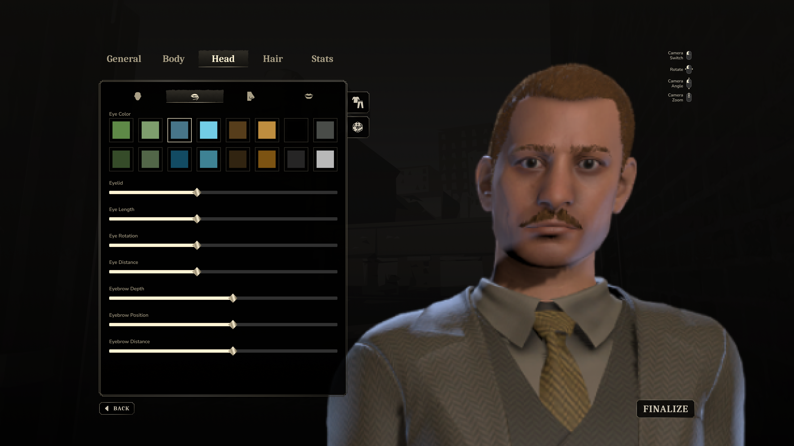
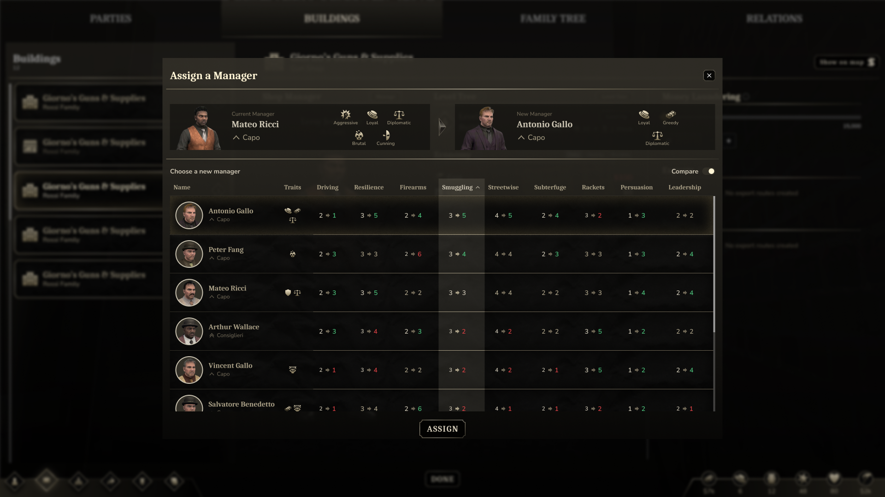
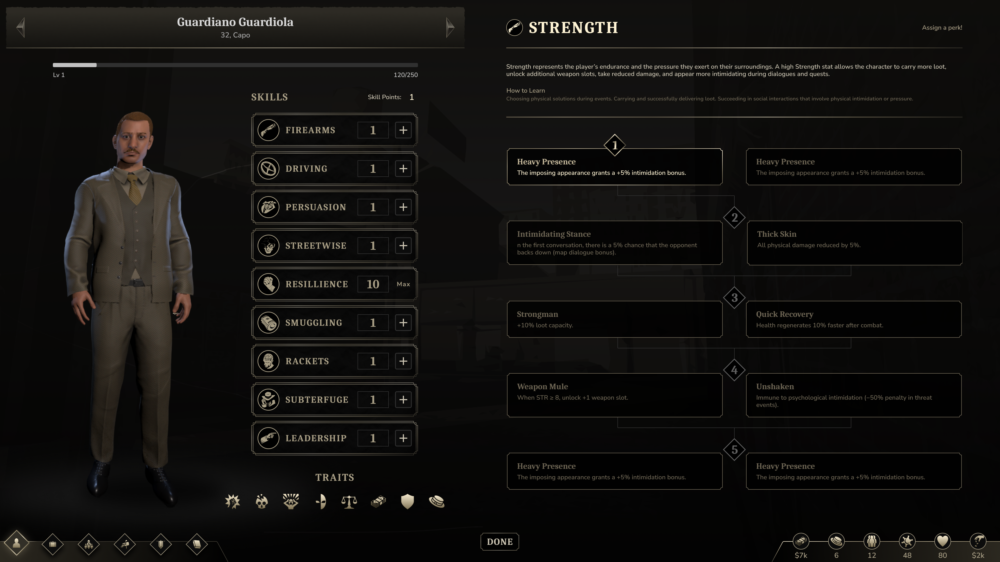
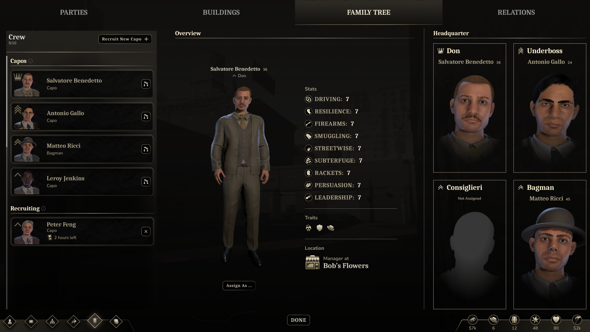

Product Designer
Game UX/UI Designer
Arzu Çetinkaya
Based in Solihull, UK
I’m a UX/UI Designer curious about what makes people interact with products the way they do, what catches their attention, what keeps them engaged, and what makes an experience feel effortless.
My experience spans AI products, B2B and B2C platforms, SaaS, ed-tech, mobile apps, and AAA PC games. Working across such different products has taught me to approach each problem from its own perspective, whether I’m designing for a business user, a student, a consumer, or a player.
I enjoy getting involved from the early stages of an idea, exploring different possibilities, and finding the details that turn a complex problem into a clear and enjoyable experience.
MUSIC AI
AI-Powered Mobile App for Voice Recreation
A mobile application where users can recreate any voice from another character, celebrity, singer, etc. Reached +1 million users and stayed top 10 in its category on the AppStore for months.

Colors
Visual Direction
A dark theme creates a focused, studio-like environment that supports creativity. Vibrant gradients highlight primary features, making core actions clear and adding energy to the interface.
Highlight
Pro subscription areas are accented in orange, guiding attention without disrupting the overall balance.
Design Trends
These colour choices reflect current AI design trends — dark backgrounds, bold gradients, and bright accents that convey innovation and clarity.

Typography
Modern & Clean
Capton was selected for its modern, clean, and versatile design, reinforcing the innovative, user-focused nature of the application.
Readability & Hierarchy
Its geometric yet friendly letterforms provide clarity and approachability, suitable for both interface elements and longer instructional texts.

Outcomes
Subscription Rates
Research on paywalls led to six variations, two of which were A/B tested. The winning design increased subscription rates by nearly 50%.
Churned Users
Pop-up designs and dedicated screens re-engaged churned users, contributing to a reduction in churn and stronger subscription growth.
+1 Million Users
The app reached over a million users and stayed top 1 in its category for months across the USA, UK, Canada, New Zealand, and more.
ACTINS AI
AI-Powered Platform for E-commerce Automation
A tool that helps online sellers automate content creation, optimize products, and manage their stores more efficiently.
Designing for Clarity
Data Visualisation
Pie, bar, and line charts effectively highlight key data points, making it easy for users to navigate and understand the information. These visuals focus on the most significant aspects, allowing for quick scanning and comprehension.
Focusing on What Matters
Content and layouts were simplified to direct users’ attention to the most important actions and information. Visual hierarchy, spacing, and color were used strategically to create focus and reduce cognitive load.

Flat & Simple Design
Accessible
A flat visual language was implemented to reduce cognitive friction and make complex AI features easier to explore.
Understandable
Each interaction was simplified to reduce cognitive load and support intuitive navigation through data-driven workflows.
Clean
A minimal visual style keeps the interface lightweight and modern.

Design System
Scalable
I built a scalable design system from the ground up, creating a consistent foundation of reusable components, styles, and patterns. It helped maintain visual consistency across the product while making new features faster and easier to design, adapt, and develop.
Consistent
A shared icon set and component library keep the interface cohesive as new features and workflows are added.
Brand Identity & Typography
Brand Identity
The blue-led palette reflects trust, reliability, and innovation, creating a familiar yet modern identity that feels professional without being overwhelming.
Typography
A clean, versatile typeface keeps dense product data readable while reinforcing the platform’s modern, trustworthy feel.

SILENT AUTHORITY: BLOOD & BOURBON
Strategical AAA PC Game
A strategical AAA PC game set in 1920’s USA, developed with Complex Universe. Focused on delivering a cosy game experience with a seamless userflow across complex strategic systems.



